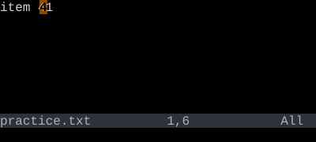
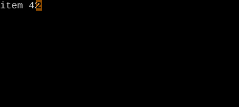
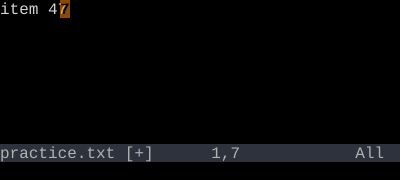

Increment and Decrement (Ctrl-A / Ctrl-X)
Find the next number, add or subtract — with counts.
Ctrl-A increments the next number on the line; Ctrl-X decrements. With a count, it adds/subtracts that much. Combined with macros and :norm, generates sequences instantly.
Increment / Decrement
Ctrl-A adds 1 to the next number on the line. Ctrl-X subtracts 1. With a count: add/subtract that count.
| Sequence | Effect |
|---|---|
| Ctrl-A | Increment next number on line by 1 |
| 10Ctrl-A | Increment by 10 |
| Ctrl-X | Decrement next number |
| {count}Ctrl-X | Decrement by count |
| {count}gCtrl-A | Increment by count, with progressive step on visual selection |
Worked example — Ctrl-A and Ctrl-X
Bump numbers up or down.



Watch
- 📺 #0468 :%norm ^x — Delete First Char (not yet published)
- 📺 #0470 Ctrl-A / Ctrl-X — Increment & Decrement (not yet published)
See also: Counts, Normal (`:norm`)